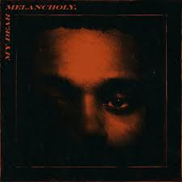
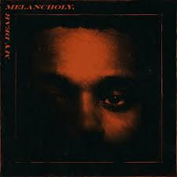

Music
Being born in a country where music is an integral part of culture, I was rocked by it from a young age.
So I grew up listening to music every day, which I always do. So I’m going to present you the last 3 albums I liked:
 

Video games
From a young age, I always liked to play video games, my goal was to finish all the games that fell into my hands,
and the harder a game was the more I wanted to play it. Today it has changed a bit, I still like to play video games but I play less.
So I’m going to show you the 3 best games I’ve played in my life:
Films
In all my life, if there is an art that has impressed me, it is the art of cinema.
Cinema is capable of reproducing all the situations of real life and even that does not exist, it is really a universe where everything is possible,
this is what directly passionate me in this art. So I’ve watched a hundred movies since my birth and the ones I love the most are: